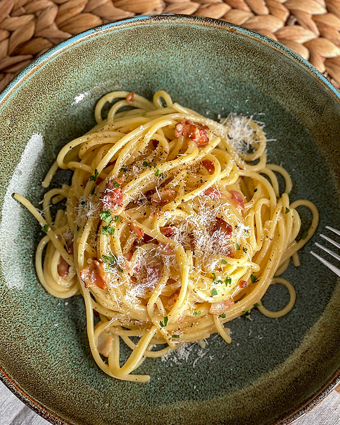

|
|
🍳 Вкусно и простоДомашние рецепты каждый день |
Сегодня готовим: |
Главная | Рецепты | Категории | Рецепт дня | Подписка | О блоге
|
 Классическая итальянская паста |
📄 Ингредиенты
⏱ Время: 25 минут |
| № | Шаг приготовления |
|---|---|
| 1 | Отварите спагетти в подсоленной воде до состояния аль денте. |
| 2 | Обжарьте бекон на сухой сковороде до хрустящей корочки. |
| 3 | В миске смешайте яйца, тёртый пармезан и чёрный перец. |
| 4 | Слейте воду, добавьте пасту к бекону, снимите с огня. |
| 5 | Влейте яичную смесь, быстро перемешайте. Подавайте сразу. |
«Секрет карбонары – в температуре. Сняли с огня – сразу влили яйца, тогда получится нежный соус, а не омлет.»
— Анастасия, автор блога
💡 Полезные термины
1 Рецепт полностью адаптирован для обычной домашней кухни.
2 Калорийность готового блюда указана приблизительно. |
|
© 2024 «Вкусно и просто». Все права защищены. Сайт создан прекрасным автором по имени Анастасия |
Наверх ↑ |